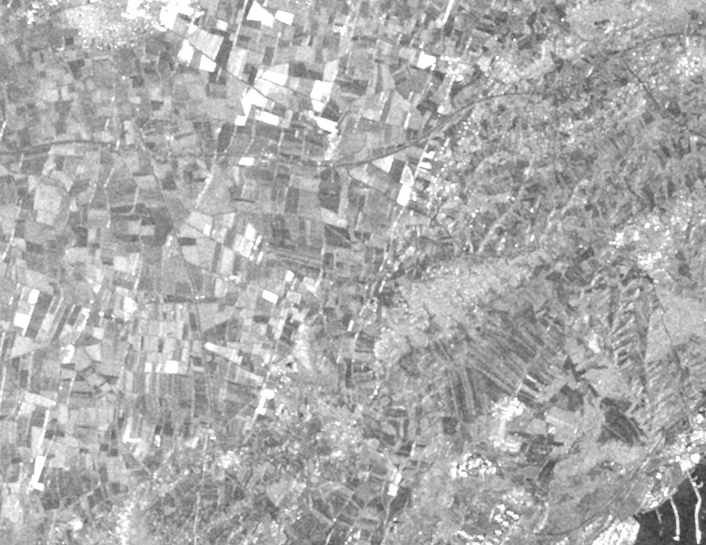

BETWEEN PASSES
NASA Space Apps 2026 · Dancing with the SARs
Rain fools
radar.
Between Passes shows
what really changed.
A weather filter for satellite radar change maps, built on NASA–ISRO NISAR, NASA SMAP and NASA POWER.
Could be just the rain
Something really changed
Real NISAR radar · Ceyhan, Türkiye · 3 Nov 2026
Team Dusk Orbit · Deniz Efe Bulut · Niğde Local Event, Türkiye
deniz2077.github.io/between-passes
01The problem
After one rainy week,
hundreds of fields look “changed”.

NISAR · 22 OCT
 12 DAYS LATER · NORMAL CHANGE MAP
12 DAYS LATER · NORMAL CHANGE MAP
Comparing two radar passes is how the world spots floods, harvests and cleared forest, through cloud and at night.
But wet soil shines brighter to radar. After the first autumn rain in Ceyhan, a normal change map flags
636
fields as “changed” (white).
Which ones really did?

02The size of the problem · 147 random places NISAR passed twice
28×
more land looked “changed” where the soil got wetter or drier.
Soil stayed the same
0.18%
Soil got wetter or drier
5.0%
Where the soil got wetter or drier, 85% of that “change” could be just the weather.
Share of land changed ≥ 3 dB, typical place · NISAR L2 GCOV repeat pairs 12 days apart · soil moisture: NASA SMAP SPL3SMP_E, same days
03The idea
Wet soil can only brighten radar.
Dry soil can only darken it.
RADAR GOT BRIGHTER ▲
RADAR GOT DARKER ▼
SOIL GOT
WETTER
(NASA SMAP)
Could be the rain
The weather explains it.
Really changed
Wetter soil can't do this.
SOIL GOT
DRIER
Really changed
Drier soil can't do this.
Could be the weather
The weather explains it.
One rule from radar physics: water in the soil reflects more of the radar signal.
So a change that goes against the measured soil moisture cannot be the weather. Something on the ground really changed: crops, water, buildings.
Rules committed to GitHub before running them on any place (2365a8e).
04The solution, on real data · Ceyhan, Türkiye
Same map. The filter sorts every change.
1 · MEASURE Two NISAR passes, same orbit, 12 days apart. Every strong change is flagged.
0.16 → 0.36
m³/m³ soil moisture
+ 27.6 mm rain (POWER)
2 · ASK THE WEATHER NASA SMAP: the soil more than doubled in water after the first autumn rain.
3 · SORT 88% could be the rain (brighter). 12% really changed (darker, against the weather).
Share of changed land in this view · NISAR L2 GCOV HH, 20 m, change ≥ 3 dB · SMAP SPL3SMP_E 9 km · rain: NASA POWER PRECTOTCORR between passes
05NASA data
Four NASA datasets. One question each.
NASA–ISRO NISAR
What changed?
L-band radar, through cloud, day and night, every 12 days.
L2 GCOV v1 (VALIDATED)
RTC γ⁰ backscatter · 20 m
ASF DAAC · 10.5067/NIL2GCOV-V1
NASA SMAP
Did the soil get wetter?
Soil moisture on both radar days. The filter's key input.
SPL3SMP_E v006
daily · 9 km EASE-Grid 2.0
NSIDC DAAC
NASA POWER
How much did it rain?
Daily rain between the two passes, for every place.
PRECTOTCORR · daily
point API
NASA LaRC
NASA HLS
Were plants removed?
An optical check in Ceyhan: only 9% of the brightened fields lost their plants.
HLSS30 v2.0 · 30 m
NDVI before/after
LP DAAC · 10.5067/HLS/HLSS30.002
Also: NASA CMR catalogue search · Earthdata Login · map context © OpenStreetMap contributors · land outlines Natural Earth
06Technical infrastructure
From a 1.9 GB radar file to an answer in any browser.
1 · FIND
NASA CMR
Two NISAR passes on the identical orbit and grid.
→2 · READ
Byte-range
Only the needed window: ~70 MB of a 1.9 GB file.
→3 · WEATHER
SMAP + POWER
Soil moisture both days, rain in between.
→4 · FILTER
Python
Sorts every change: rain or real.
→5 · SHOW
Static web app
No server, no login. Re-checks its numbers on load.
Run it on any place NISAR has flown
python scripts/bp_check.py --lat 38.50 --lon -98.50 --name "Kansas"
Finds the passes, reads the weather, writes the filtered map and a report. Free Earthdata account.
Stack
Python · h5py · NumPy · SciPy · rasterio · Shapely · HTML/JS canvas, no framework · GitHub Actions → Pages · 37 automated tests · MIT open source
07The product · live at deniz2077.github.io/between-passes
148 places in 39 countries.
Click any of them.

41
something really changed
27
mostly just the weather

Kansas, USA: 50 mm of rain. All of the change went the way the soil did.

Punjab, India: the soil stayed the same, yet 20% of the land changed.
08Local impact · and the proof
Ceyhan: where to look first.

128 fields got darker while the soil got wetter. Listed largest first, with the nearest village, on a Turkish page for farmers and agriculture technicians.
Rules first. Then the data.
Worldwide test, repeated
With the rules written first, NISAR's change followed SMAP's soil moisture at 74 random places, then at 73 new ones (ρ = 0.58, 0.55; p < 0.001).
3 predictions, locked in advance
If Ceyhan's bright fields were just wet, they will fade as the soil dries. Locked on GitHub before NASA released the next passes (e3915c1, a068d8f). The app scores them automatically, whatever they say.
Honest limits
A screening filter: it says where to look, not what happened. SMAP cells are 9 km, so a local shower can look like real change.
09Expected impact
Fewer false alarms.
Real changes first.
Flood & disaster teams
See real flooding and damage, not fields that just got wet.
Farm & forest agencies, insurers
Check real changes first, after every rain.
Farmers & inspectors
Which fields to visit first, with the village name.
Scientists
An open, tested way to take the weather out.
Free · open source · no login · anywhere NISAR flies · every 12 days · through cloud and at night
deniz2077.github.io/between-passes
github.com/deniz2077/between-passes
The project idea, research question, study area and every key decision are mine. AI (Claude Code) wrote the code, ran the data analysis and drafted the documents, and suggested methods and wording that I reviewed and chose to use.